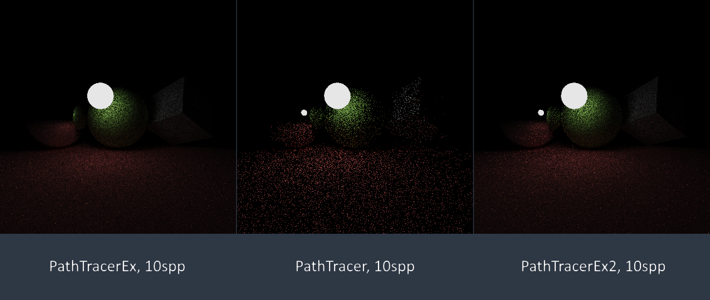

问题
最近开始写自己的离线渲染器Atrc，撸个暴力的路径追踪器很是容易，代码甚至只有十几行：
Spectrum PathTracer::Trace(const Scene &scene, const Ray &r, uint32_t depth) const
{
if(depth > maxDepth_)
return SPECTRUM::BLACK;
Intersection inct;
if(!FindClosestIntersection(scene, r, &inct))
return SPECTRUM::BLACK;
Spectrum ret;
if(inct.entity->AsLight())
ret += inct.entity->AsLight()->Le(inct);
auto bxdf = inct.entity->GetBxDF(inct);
auto bxdfSample = bxdf->Sample(-r.direction, BXDF_ALL);
if(!bxdfSample)
return ret + bxdf->AmbientRadiance(inct);
auto newRay = Ray(inct.pos, bxdfSample->dir, 1e-5);
ret += bxdfSample->coef * Trace(scene, newRay, depth + 1)
* SS(Abs(Dot(inct.nor, bxdfSample->dir)) / bxdfSample->pdf)
+ bxdf->AmbientRadiance(inct);
return ret;
}这里用一个最大追踪深度来截断过长的路径会导致渲染结果是有偏的，不过这一问题很容易解决（比如引入Russian Roulette策略等），不是本文要讨论的重点。从代码可以看出，路径追踪算法从摄像机镜头出发，沿着一条随机路径不断追寻光源，只有恰好击中了光源的路径才能为最终结果贡献出非零的辐射值（Radiance）。因此，光线越容易击中光源，算法收敛得越快；反之，如果光源很小或是被遮挡得很厉害（需要经过多次反射/折射才能击中），那么一条路径会以很小的概率击中光源并得到一个很亮的点，同时又以极大的概率无法击中光源从而得到黑色，这会导致画面上出现许多噪点。

图中，中间是场景的几何形体，左边是用淡蓝色的“天空”把场景包裹起来后用100spp渲染的结果，右边则是在场景中添加一个很小的发光球体后用100spp渲染的结果。可以看到，左边的场景中路径很容易击中天空这一无比巨大的光源，而右边的场景中要击中这个小球则是一个概率很小的事件，这导致同为100spp，右边的噪点比左边的明显得多。这并不是场景的明暗导致的，而是光源过小或散射次数过多，很难被采样到导致的（小光源常常意味着较暗的场景，因此有许多人以为噪点多是由于场景亮度低）。
理论
回顾路径追踪的理论基础——渲染方程：
其中左侧的表示从处沿方向的出射辐射量，是该点作为光源贡献出的辐射，右侧的积分（积分域是球面立体角）则收集了从各个方向照射到处的光，并计算被反射/折射（描述了处物体材质的反射/折射特点）到方向的部分。大部分渲染方面的算法都和这一方程有千丝万缕的联系。
该方程对应的蒙特卡洛估计量是：
其中对外来光的方向采样了次，采样所使用的概率密度函数为。路径追踪算法所使用的估计量就相当于，发射100条路径就等于是将100个的估值结果综合起来，这样得到的整体依然是一个的估计量。
估计量采样的对象是照射到点处的外来光的方向。如果光源很小，那么能够采样到光源的立体角也就很小，而这些方向往往是的主要来源。依照重要性采样的原则，我们应当适当地修改，使得采样到这些方向的概率变得更大。这个方案在实现上比较困难，因此我们考虑另一种方案——将对光源的采样分离出来。由于任意一个都一定可以被分解为两部分，我们将渲染方程右侧的积分用此式稍微展开一下，得到：
根据立体角微元和面积微元间的关系：
可以将立体角上的积分转换为场景中所有表面上的积分：
其中是上的面积微元，在与间没有阻碍时为1，否则为0。根据自身性质，可以被划分为发光表面和不发光表面，其中上的任意一点对应的均为0，于是上式的积分域可以被缩减为。这样一来，原本在上很难采样到小光源对应的方向，现在采样范围变成了光源的表面，哪有采不到的道理？
综上，散射量可以被分割为两部分，是光源直接照射到点产生的散射，则是由其他表面散射到点并再次发生的散射。原来的渲染方程现在变成了：
对应的估计量也发生了相应的改变：
初步实现
改进后的PathTracer似乎要复杂许多，实际上也就是抄上面的估计量公式而已。用新的路径追踪器和旧的各自以10spp渲染一幅图像，对比如下：

可以看到，在图像中绝大部分被照亮的地方，右侧新的追踪器（以后称为PathTracerEx）都比左侧的旧版本（称为PathTracer）不知高到哪里去了，正和我们的预期相符。 当然，我们可以用两个追踪器各自以高采样数渲染一幅图像，对比结果以确保改进版本的正确性，这里不再详述。
值得注意的是右侧光源正下方的一小块地面噪点明显，表现得还不如改进前的版本，这是因为此处地面离光源很近，Shadow Ray（用来判定光源上的采样点与物体表面间是否有障碍物）非常容易被光源自身遮挡住，很难产生实际有效的光源采样。这一问题可以通过修改光源采样策略，根据待照射点的位置进行重要性采样来改善。
处理Specular表面
看起来一切都很美好？让我们试试镜面球体——

上图中左侧是改进后的结果，右侧是之前的结果。在高达1000spp的采样数下，改进后的追踪器依然比之前的有明显的收敛速度优势……等等，左边的镜子怎么不反射光源呢？
事实上，这是一个比“收敛速度慢”要严重得多的问题。PathTracerEx通过在光源上采样来计算光照，但问题是镜面反射的反射分布是个-分布，连带着也是在估值一个-函数的积分。而用一个非奇异的分布进行采样，能有效地采到点才有鬼了。因此，对于镜面这样的特殊反射/折射分布（以后称这样的反射为Specular材质），在光源上采样是行不通的，还是得回到BRDF采样等能反映出其奇异性质的方法上来。
既然知道了问题产生的原因，解决起来也不困难——每次求得射线与表面的交点时都根据交点处材质是否是Specular类型来决定使用哪一种采样方法即可。公式大而不难，就直接堆这儿了：
对应的估计量：
小结
再次改进的路径追踪器被称作PathTracerEx2，依然是抄上面的估计量公式。最后放上三个追踪器在10spp下的表现（选用如此低的采样数是为了充分表现不同采样器间的收敛速度差异）：

中间的是普通的PathTracer，表现得一如既往地糟糕；左侧的PathTracerEx收敛得最快，可惜连镜面反射中的光源都漏掉了；右侧是最后的PathTracerEx2，运行效率比另外两个都略低一些，但正确性吊打PathTracerEx，收敛速度吊打PathTracer，令人满意。
从上述的一系列实验和分析可以看到，收敛慢或结果有偏（比如PathTracerEx，在有镜面时可以说是有偏得不行了）几乎都是由与采样概率分布和函数形态差异太大导致的采样困难导致的。尽管本文最后给出的PathTracerEx2看似表现良好，若是面对接近Specluar但又不至于成为理想镜面的表面（比如略微粗糙的金属表面），按照在光源上采样的策略，可以预见收敛速度会很慢。这一缺陷可以用一些别的方法来改善，如多重重要性采样（Multiple Importance Sampling）等，那就不在本文讨论范围内了。
本文所涉及到的三个路径追踪器的完整代码可以在这里找到。